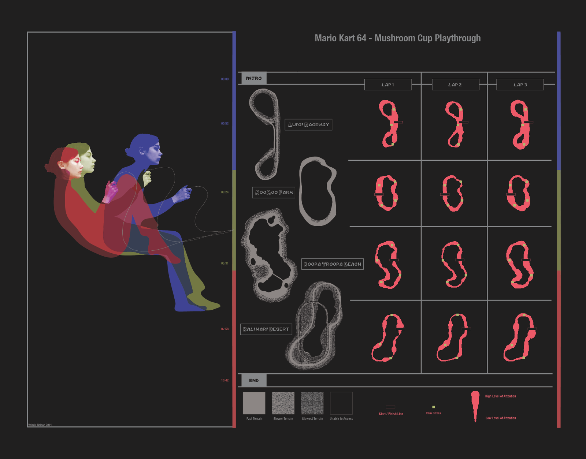
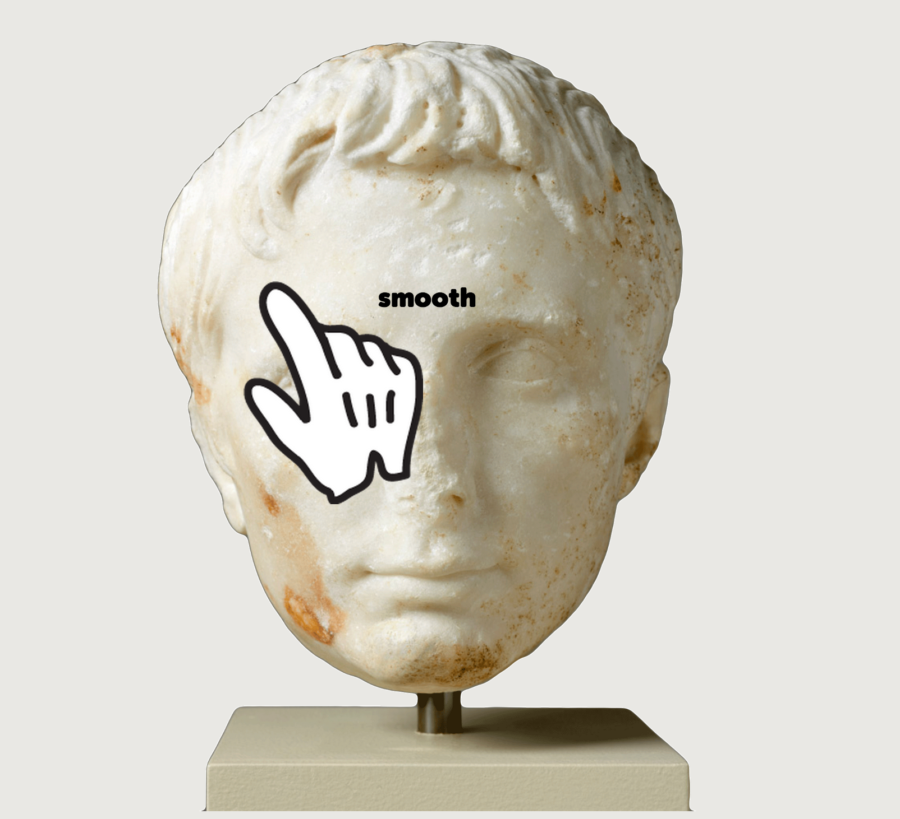
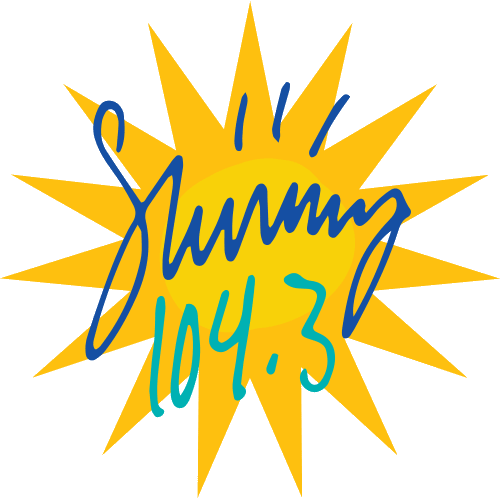
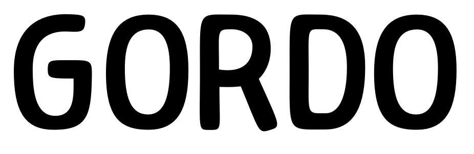
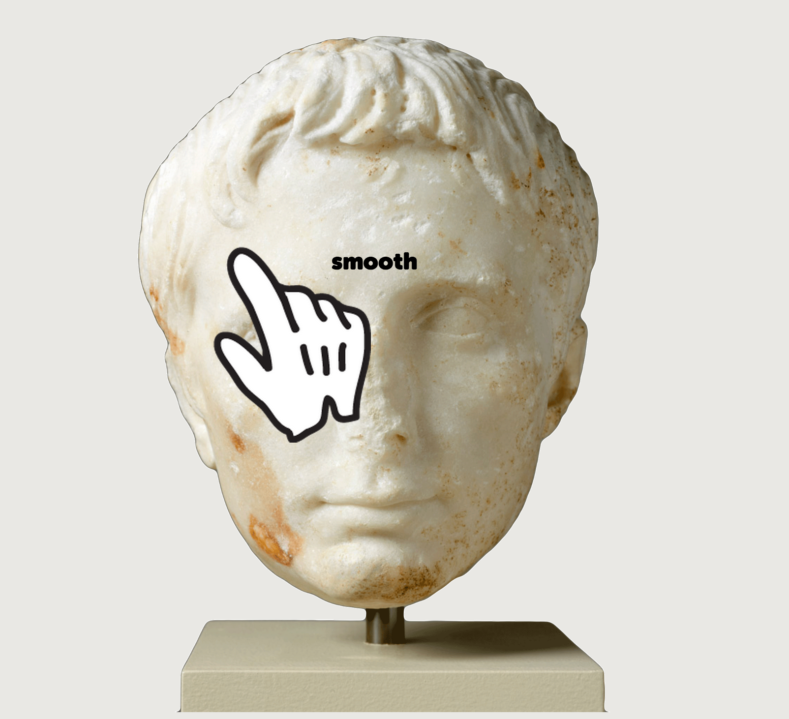
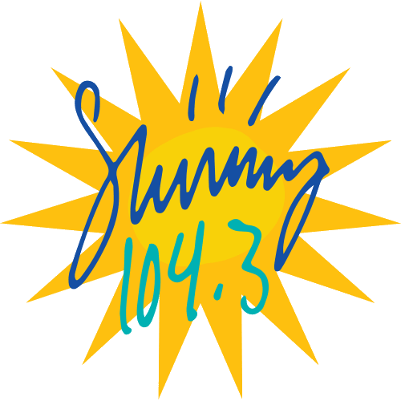
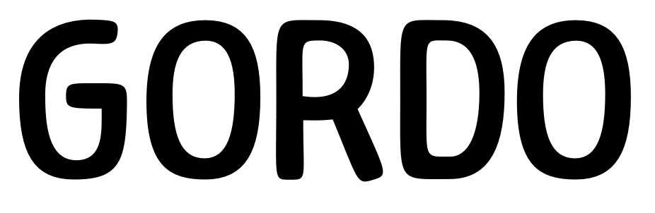

Aeon
Aeon is a text typeface designed for Dennis Danvers' novel, "Circuit of Heaven".
It grew inspiration from the style of Trump Medieval, the fat serifs of FF Dora, and the overall angular shape of Capita Regular.
The name "Aeon" and the textface itself is also an homage towards the idea of preserving oneself into a digital realm, an idea that is emphasized within "Circuit of Heaven".
 





Sunny 104.3 website.
Mapping the experience of playing a video game for one four-level race. The poster includes objective maps, how I played the levels, and my attention-span while doing so.
This is the current portfolio website for Valerie Autumn Nelson.
Working with my my fellow design studio, Petrichor, we were to create posters and design tickets for RISD's Spring concert, "Take A Break".